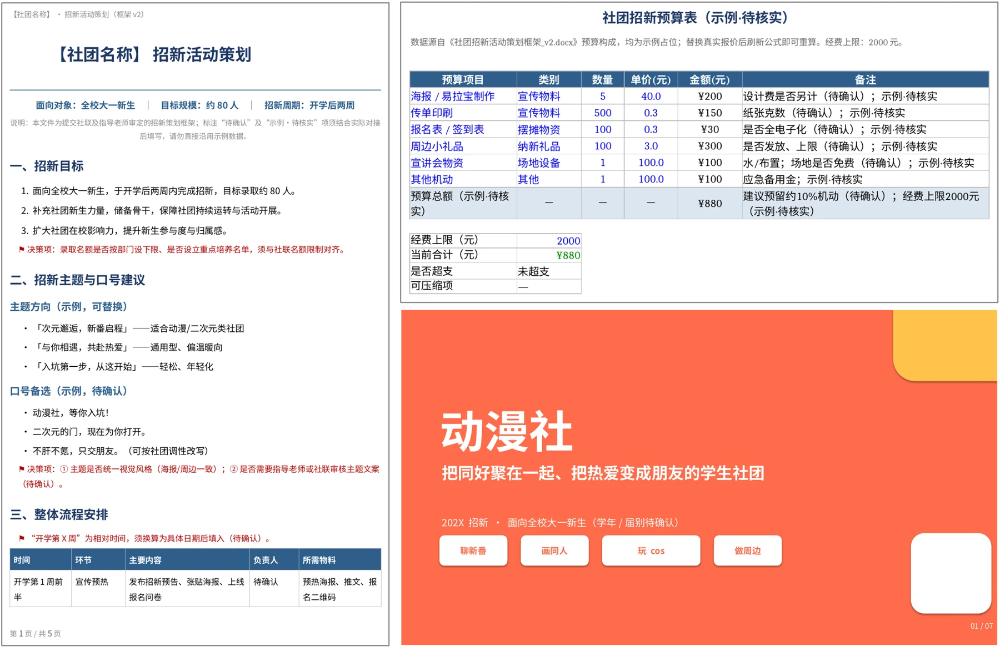
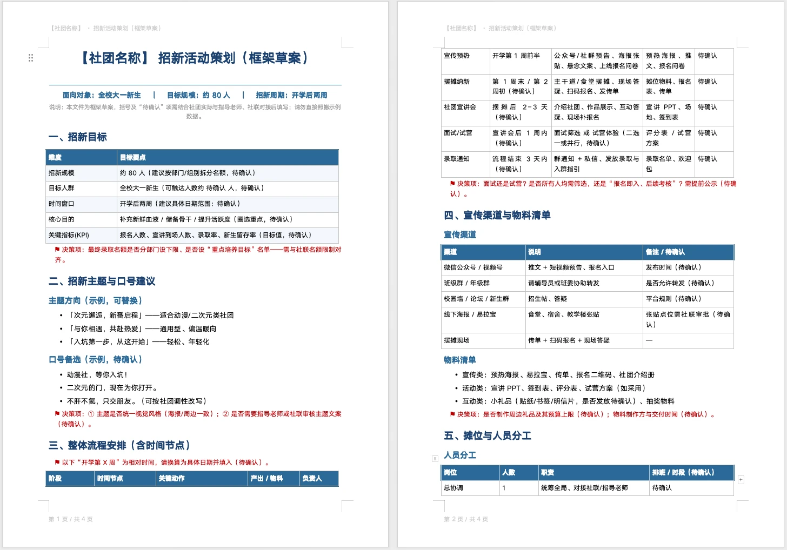
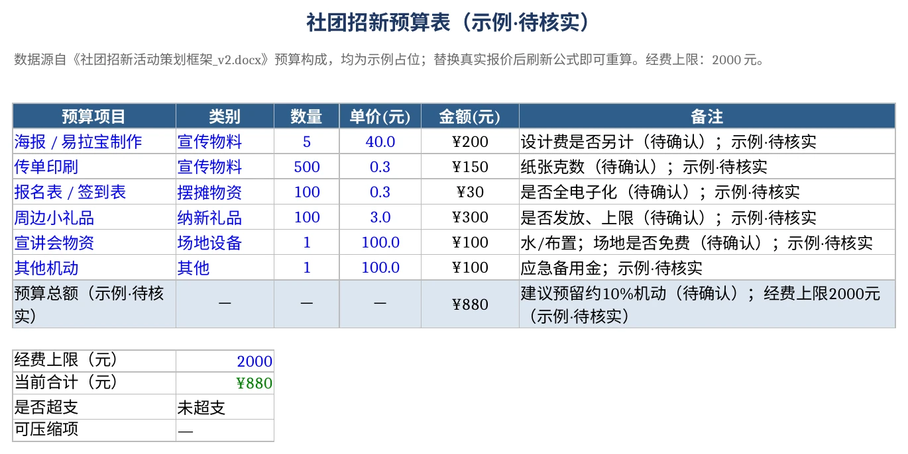
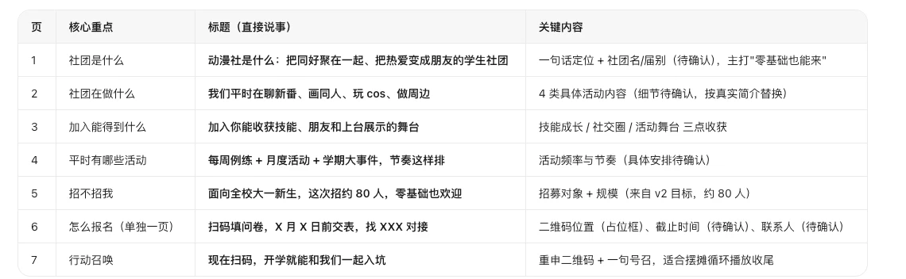
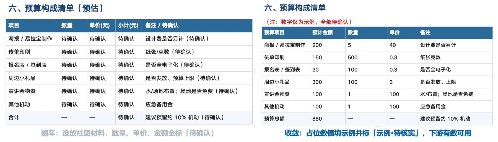

第一部分｜先看成品
01｜看清交付物
一条任务简报，换回三份口径一致的办公文档。
AI 按同一份任务简报生成 Word 招新策划案、Excel 招新预算表和宣讲 PPT。三份材料共用一套事实和数字。
- Word 招新策划案：给社联和指导老师确认招新方向。
- Excel 招新预算表：算清一共花多少、每项花在哪。
- 宣讲 PPT：给不了解社团的新生看，现场五分钟讲明白。

三份成品一览
02｜人工与 AI
三份材料最耗时间的环节，是反复搭结构、对口径和返工。
人工完成：招新干事要分别从空白文档搭出策划案、预算表和宣讲 PPT，补齐内容、核对口径；每次改动还得逐份调整。招新窗口只有开学两周，返工一天，就少一天宣传时间。
AI 协作：先根据任务简报生成三份材料的结构和初稿，让关键信息保持一致；修改时指出具体差异，按要求调整，不必每次从头重做。
第二部分｜逐件生成
01｜写任务简报
多数「AI 做得不好」的办公活，问题出在交付标准没说清，不在模型不会写。
同一句“帮我做个招新 PPT”，换两个人问会得到两种结果，差别不在模型，在有没有把下面五件事交代完整。
| 要说清什么 | 招新案例里怎么填 |
|---|---|
| 目标 | 这份材料要帮谁做什么决定。给审核方看，确认招新方案能不能办、经费批不批 |
| 受众 | 读的人是谁，懂不懂背景。审核方看结论和预算，新生看做什么、怎么报名 |
| 材料 | 哪些是事实来源，哪些只是参考。社团简介、往届招新人数与经费、学校招新时间窗 |
| 格式 | 要 Word、Excel、PPT，还是三者联动。 |
| 验收 | 怎么判断结果可用。预算不超上限、三份口径一致、PPT 投屏不溢出 |
02｜生成Word 招新策划案
把结构、语气和交付标准写进提示词，AI 才能一次生成到位。
策划案是整件事的地基，预算表和宣讲 PPT 的口径都由它继承，所以提示词要把话说到最细。
帮我生成一份社团招新活动策划的 Word 框架。
社团：动漫社，面向全校大一新生，目标招新约 80 人，周期开学后两周。
包含：招新目标、主题口号、流程（含时间节点）、宣传渠道与物料、人员分工、预算构成、风险预案。
语言简洁，重点把框架和关键决策项列清楚，适合拿去和指导老师、社联确认方向。
社团历史、往届成绩这类事实，没有就标「待确认」、不编造；预算数量单价等占位数值，填一组示例并标「示例·待核实」。
输出可编辑 docx。
最后两句是整条提示词里最值钱的地方。它把“没有的事实”和“没有的数值”拆成两种处理方式：事实缺失就标「待确认」、绝不上编；数值缺失就填一组标注清楚的示例，让下游的预算表有数可算。这样出来的框架能直接拿去和老师、社联过方向，每一格都清楚自己该不该填。

策划案框架草稿截图
03｜生成Excel招新预算表
先定业务问题，再决定表格长什么样。
做预算表之前先回答三个问题：一共要花多少、每一项花在哪、有没有超出经费。这三个问题决定了表里必须有数量、单价、金额，以及一个能随时重算的合计。
根据策划案的预算构成，生成招新预算表 Excel。
字段：项目、类别、数量、单价、金额、备注；金额用公式（数量×单价），末尾求和给总额，可刷新。
经费上限 2000 元，超过就标出并列可压缩项，不自行删项。
分项与合计必须与策划案一致，不一致就停下列差异、不静默改数。
金额一栏必须是公式，不能是写死的数字。改了单价或数量，合计要跟着变，审核方问起某一行怎么算的，当场就能指出来。提交前再看一眼分项之和与策划案的预算构成对不对得上。

Excel招新预算表
04｜生成宣讲 PPT
先定故事线，再排版面。
宣讲 PPT 最容易做反：一上来就挑模板、调颜色，结果七页讲完新生还是不知道社团是干什么的。把顺序倒过来，先回答三个问题：给谁看、看完要做什么决定、现场讲多久。
根据社团简介和策划案，做一份 8 页以内的招新宣讲 PPT。
受众：完全不了解社团的大一新生；现场讲 5 分钟，也要能摆摊循环播放。
先给一版故事线和每页标题，我确认后再生成 PPT。
每页只讲一个重点、标题直接说事，报名方式单独一页；无法确认的标待确认、不编造。
先拿到故事线再让它排版面，是最省事的一步。故事线阶段改一句话几乎不花成本，等 PPT 生成完再改结构，就得连版式一起返工。这份故事线里，从“社团是什么”到“现在扫码”七页，报名方式单独占一页，页数、标题、关键内容一眼能核。

PPT宣讲故事线
PPT宣讲封面
05｜立验收标准
能不能直接交，不看观感，看每份材料过不过得了自己那把尺子。
策划案的尺子：关键数字能回到源文件；语气正式，可以直接提交社联和指导老师。数字对不上源材料的，一律打回。
预算表的尺子：合计是公式、能刷新；分项与策划案的预算构成对得上；超上限有提示，不偷偷改数。
宣讲 PPT 的尺子：投屏不溢出；每页只有一个重点；关键数字来自预算表，不另起一套。
三把尺子各有各的检查对象，没有一条是“看着还行”。任务简报里填的验收那一栏，到这里要落成这三条具体标准，够格才交出去。
第三部分｜守住质量
01｜堵住翻车点
材料放没放进工作区，同一条提示词会产出两种结果。
翻车的样子：没把社团材料放进工作区，AI 只能空着手写。数量、单价、金额全标「待确认」，看着严谨，实际上一张空表，下游的合计算不出来，PPT 也没有数字可引用。
收敛的样子：事实缺失照标「待确认」、绝不编造；占位数值填一组示例，并标注「示例·待核实」，真实报价拿到后替换即可。表算得出合计，故事线有数字可写。
区分这两类内容，是整条流程里最需要提前交代的一句话。社团历史、往届成绩这类事实，没有就是没有，编出来会直接伤到审核；预算的数量单价属于占位数值，空着反而卡住后面的每一步，填上标注清楚的示例才是对的做法。

翻车与收敛对比
02｜改掉常见错
提示词里少一句约束，AI 就多一处猜测。
| 常见错误 | 为什么翻车 | 更好的写法 |
|---|---|---|
| 「做个招新 PPT，要高级点」 | 没有受众、目标、材料约束，AI 只能猜风格 | 说清受众、讲多久、页数、要做的决定、必须保留的数据 |
| 「分析一下报名表」 | 没有业务问题，只能泛泛总结 | 说清要回答什么问题、算哪些指标、按什么维度比 |
| 「写一份招新方案」 | 没有文档类型和语气 | 说清是策划、总结还是通知，指定读者 |
| 「全部自动完成，不用问我」 | 关键口径没确认，风险被放大 | 先让 AI 出材料清单、大纲、字段预览，确认后再生成 |
四条错误的共同点，是把该由自己决定的事情推给了 AI：风格、问题、体裁、口径。提示词写清楚的，正好就是这四样。
03｜搬到别处用
任务简报加验收标准，可以搬到任何一件要出几份材料的事上。
- 写任务简报：目标、受众、材料、格式、验收，五行填完再动手。
- 让 AI 出产物：先要框架和字段预览，确认后再让它生成正式文件。
- 对着验收标准核一遍：数字回源、公式可刷新、投屏不溢出，逐条过。
一次班级活动、一场校园比赛、一个课程小组作业，都能套这套流程。换的是题材，不变的是先立标准、再要产物、最后逐条核对的顺序。
工具是干活的手，任务简报和验收标准，才是自己该握住的两样。
小结
- 任务简报：目标、受众、材料、格式、验收，一次说清，AI 才不用猜。
- 各有一招：Word 说清结构和口径，Excel 先定业务问题，PPT 先定故事线。
- 验收立硬尺：数字能回源、公式能刷新、投屏不溢出，够格才交出去。
- 一处出多份：同一条事实链贯穿三份材料，改一处，其余跟着对齐。